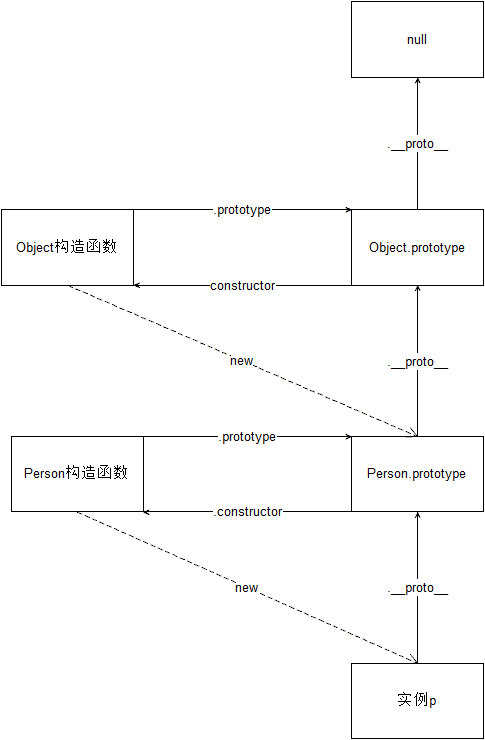

课程介绍
课程大纲
学习目标
- 理解面向对象开发思想
- 掌握 JavaScript 面向对象开发相关模式
- 掌握在 JavaScript 中使用正则表达式
学习资源
- JavaScript 高级程序设计（第三版）
- 前端的红宝书
- 建议每一个前端都完整的看一遍
- JavaScript面向对象编程指南（第2版）
- JavaScript面向对象精要
- JavaScript 权威指南
- JavaScript 语言精粹
- 你不知道的 JavaScript
面向对象编程

基本概念
什么是对象？
Everything is object （万物皆对象）

对象到底是什么，我们可以从两次层次来理解。
(1) 对象是具体事物的抽象。
一本书、一辆汽车、一个人都可以是对象，当实物被抽象成对象，实物之间的关系就变成了对象之间的关系，从而就可以模拟现实情况，针对对象进行编程。
问： 书是对象吗
(2)对象是无序键值对的集合，其属性可以包含基本值、对象或者函数
每个对象都是基于一个引用类型创建的，这些类型可以是系统内置的原生类型，也可以是开发人员自定义的类型。
什么是面向对象？
面向对象编程 —— Object Oriented Programming，简称 OOP ，是一种编程开发思想。
在面向对象程序开发思想中，每一个对象都是功能中心，具有明确分工，可以完成接受信息、处理数据、发出信息等任务。 因此，面向对象编程具有灵活、代码可复用、高度模块化等特点，容易维护和开发，比起由一系列函数或指令组成的传统的过程式编程（procedural programming），更适合多人合作的大型软件项目。
面向对象与面向过程：
- 面向过程就是亲历亲为，事无巨细，有条不紊，面向过程是解决问题的一种思维方式，（执行者的角度）
- 关注点在于解决问题的过程（先xx，然后xx，在xx）；
- 面向对象就是找一个对象，让她去做这件事情（指挥者的角度）
- 关注点在找到能解决问题的对象上。
- 面向对象不是面向过程的替代，而是面向过程的封装
- 例如洗衣服（面向过程和面向对象的区别）
面向对象的特性：
- 封装性
- 将功能的具体实现，全部封装到对象的内部，外界使用对象时，只需要关注对象提供的方法如何使用，而不需要关心对象的内部具体实现，这就是封装。
- 继承性
- 在js中，继承的概念很简单，一个对象没有的一些属性和方法，另外一个对象有，拿过来用，就实现了继承。
- 注意：在其他语言里面，继承是类与类之间的关系，在js中，是对象与对象之间的关系。
- [多态性]
- 多态是在强类型的语言中才有的。js是弱类型语言，所以JS不支持多态（强类型语言具有多态性）
创建对象的方式
内置构造函数创建
我们可以直接通过 new Object() 创建：
//在js中，对象有动态特性，可以随时的给一个对象增加属性或者删除属性。
var person = new Object()
person.name = 'Jack'
person.age = 18
person.sayName = function () {
console.log(this.name)
}
缺点：麻烦，每个属性都需要添加。
对象字面量创建
var person = {
name: 'Jack',
age: 18,
sayName: function () {
console.log(this.name)
}
}
缺点：如果要批量生成多个对象，应该怎么办?代码很冗余
简单改进：工厂函数
我们可以写一个函数，解决代码重复问题：
function createPerson (name, age) {
return {
name: name,
age: age,
sayName: function () {
console.log(this.name)
}
}
}
然后生成实例对象：
var p1 = createPerson('Jack', 18)
var p2 = createPerson('Mike', 18)
缺点：但却没有解决对象识别的问题，创建出来的对象都是Object类型的。
继续改进：构造函数
构造函数是一个函数，用于实例化对象，需要配合new操作符使用。
function Person (name, age) {
this.name = name
this.age = age
this.sayName = function () {
console.log(this.name)
}
}
var p1 = new Person('Jack', 18)
p1.sayName() // => Jack
var p2 = new Person('Mike', 23)
p2.sayName() // => Mike
而要创建 Person 实例，则必须使用 new 操作符。
以这种方式调用构造函数会经历以下 4 个步骤：
- 创建一个新对象
- 将构造函数的作用域赋给新对象（因此 this 就指向了这个新对象）
- 执行构造函数中的代码
- 返回新对象
构造函数需要配合new操作符使用才有意义，构造函数首字母都需要大写
术语：
- 实例（对象）：通过构造函数创建出来的对象，实例可以若干个
- 实例化：构造函数创建对象的过程
- 成员：对象的属性和方法
构造函数的缺点
使用构造函数带来的最大的好处就是创建对象更方便了，但是其本身也存在一个浪费内存的问题：
function Person (name, age) {
this.name = name
this.age = age
this.type = 'human'
this.sayHello = function () {
console.log('hello ' + this.name)
}
}
var p1 = new Person('lpz', 18)
var p2 = new Person('Jack', 16)
console.log(p1.sayHello === p2.sayHello) // => false
解决方案：
function sayHello() {
console.log('hello ' + this.name)
}
function Person (name, age) {
this.name = name
this.age = age
this.type = 'human'
this.sayHello = sayHello
}
var p1 = new Person('lpz', 18)
var p2 = new Person('Jack', 16)
console.log(p1.sayHello === p2.sayHello) // => true
缺点：会暴漏很多的函数，容易造成全局变量污染。解决方案（把方法集中放置到一个对象中）
原型
原型基本概念
Javascript 规定，每一个函数都有一个 prototype 属性，指向另一个对象。这个对象我们把它叫做原型（原型对象）
原型的作用：能够解决构造函数造成的内存浪费的问题
这个对象的所有属性和方法，都会被构造函数的实例继承。
这也就意味着，我们可以把所有对象实例需要共享的属性和方法直接定义在 prototype 对象上。
function Person (name, age) {
this.name = name
this.age = age
}
console.log(Person.prototype)
Person.prototype.type = 'human'
Person.prototype.sayName = function () {
console.log(this.name)
}
var p1 = new Person(...)
var p2 = new Person(...)
console.log(p1.sayName === p2.sayName) // => true
这时所有实例的 type 属性和 sayName() 方法，其实都是同一个内存地址
构造函数、实例、原型三者之间的关系
构造函数：构造函数就是一个函数，配合new可以新建对象。
实例：通过构造函数实例化出来的对象我们把它叫做构造函数的实例。一个构造函数可以有很多实例。
原型：每一个构造函数都有一个属性prototype，函数的prototype属性值就是原型。通过构造函数创建出来的实例能够直接使用原型上的属性和方法。
思考：内置对象中，有很多的方法，这些方法存在哪里？
__proto__（不推荐）
任意一个对象，都会有__proto__属性，这个属性指向了构造函数的prototype属性，也就是原型对象。
获取原型对象：
- 通过
构造函数.prototype可以获取 - 通过
实例.__proto__可以获取（隐式原型） - 它们指向了同一个对象
构造函数.prototype === 实例.__proto__
注意：__proto__是浏览器的一个隐藏（私有）属性，IE浏览器不支持，不要通过它来修改原型里的内容，如果要修改原型中的内容，使用构造函数.prototype去修改
constructor属性
默认情况下，原型对象中只包含了一个属性：constructor，constructor属性指向了当前的构造函数。

原型链
原型链概念
任何一个对象，都有原型对象，原型对象本身又是一个对象有__proto__属性，所以原型对象也有自己的原型对象，这样一环扣一环就形成了一个链式结构，我们把这个链式结构称为：原型链。
绘制对象的原型链结构：
//1. var p = new Person();
//2. var o = new Object();
//3. var arr = new Array();
//4. var date = new Date();
//5. Math
//6. 查看一个div的原型链结构
总结：Object.prototype是原型链的尽头，Object.prototype的原型是null。

属性查找原则
如果是获取操作
- 会先在自身上查找，如果没有
- 则根据
__proto__对应的原型去找，如果没有 - 一直找到
Object.prototyp，如果没有，那就找不到了。
如果是修改操作：
只会修改对象自身的属性，如果自身没有这个属性，那么就会添加这个属性，并不会修改原型中的属性。
Object原型上常用的成员
hasOwnProperty方法
作用：判断该属性是否是该对象自身的，如果是返回true
in运算法 for...in...
语法： 属性 in 对象
作用：对象能否访问该属性，如果可以返回true
使用场景：使用在for... in...遍历对象中，过滤出自身属性。
继承
继承：子承父业
在js中的继承概念非常简单，拿来主义：一个对象自己没有的属性和方法，另一个对象有，拿过来使用，就实现了继承。
继承的目的：让一个对象可以使用另一个对象的属性和方法。
JS常见的几种继承模式：
混入式继承（mixin）
把一个对象中的属性和方法拷贝到另一个对象中。
var ff = {
name:"飞飞",
extend: function(obj) {
for(var k in obj) {
this[k] = obj[k];
}
}
}
原型链继承
一个对象可以访问构造函数的原型中的属性和方法，那么如果想要让一个对象增加某些属性和方法，
只需要把这些属性和方法放到原型对象中即可。这样就实现了继承, 称之为原型链继承
直接给原型增加属性和方法
原型替换（注意：constructor）
// 原型链继承的另外写法： 原型替换
// 原型替换问题：会造成constructor属性丢失
Person.prototype = {
// 解决方案： 给新对象手动添加constructor属性指向当前的构造函数
constructor: Person,
color: "red",
legs: 2,
sayHi: function () {
console.log("hi");
}
};
var p2 = new Person();
console.log(p2.color);
- mixin+原型替换
function Person(){}
var haohao = {
car: "法拉利",
money: 1000000000,
house: "新疆海景房"
}
var dafeige = {
handsome: "very handsome",
youm: "幽默的男人"
}
// 需求：让Person的所有实例对象可以继承到haohao dafeige 所有成员。
// 混入 + 原型链继承一起使用
// 混入： 把dafeige 等 添加给 Person的原型
// 原型链： Person的所有实例对象 原型链继承到 原型上的成员
Person.prototype.extend = function (obj) {
for(var k in obj){
if(obj.hasOwnProperty(k)){
this[k] = obj[k];
}
}
}
// extend 方法是被Person.prototype 调用了，所以extend 方法内部的this指向Person.prototype
// this 谁调用，指向谁。
Person.prototype.extend(haohao);
Person.prototype.extend(dafeige);
var p1 = new Person();
var p2 = new Person();
console.log(p1.car);
经典继承Object.create
最初是由道格拉斯丶克罗克福德发布的一篇文章提出的，ECMAScript5新增了Object.create()方法来规范化了这种继承。
ES5中新增了一个方法Object.create(),方法会使用指定的原型对象及其属性去创建一个新的对象。
//参数：proto 一个对象
//返回值：obj 新对象，新对象的原型就是proto
var obj = Object.create(proto);
console.log(obj);
其他继承方式
借用构造函数继承
function Person(name,age,gender){
this.name = name;
this.age = age;
this.gender = gender;
}
function Chinese(name,age,gender,skin){
//借用构造函数继承，这里的this指向当前调用的实例对象xm
Person.call(this,name,age,gender);
this.skin = skin||"黄色"；
}
var xm = new Chinese("xm",20,"male","黄色")；
console.log(xm);
注意：使用call方法借用构造函数方法，查看下方上下文方法（方法借用）中的call方法。
组合继承
- 借用构造函数继承 ，继承构造函数内的属性
- 原型链继承，继承构造函数原型的方法
Person.prototype.sayHi = function(){
console.log("hello,我是"+this)
}
//原型替换，把Person.prototype地址拷贝给Chinese.prototype，修改Chinese.prototype也会影响到Person.prototype
//Chinese.prototype = Person.prototype；
//解决方案
Chinese.prototype = new Person();
//修复原型替换后constructor属性丢失问题，手动修改constructor
Chinese.prototype.constructor = Chinese；
函数进阶
定义函数的三种方式
函数声明
fn();//函数声明可以先调用，在声明
function fn(){
console.log("这是函数声明")
}
函数表达式
var fn = function() {
console.log("这是函数表达式");
}
fn();//函数表达式必须先声明，再调用
构造函数Function
//函数也是对象，可以使用Function构造函数new出来
//相当于var fn = function(){}
var fn = new Function();
//语法：new Function(arg1,arg2,arg3..,body);
// 1. 所有的参数都是字符串类型。
// 2. 前面可以定义任意多个形参，最后一个参数是代码体。
var fn = new Function("alert(1111)");
fn();
var fn1 = new Function("a1", "a2", "alert(a1+a2)");
fn1(1,2);
【案例：代码实时预览效果.html】
try-catch捕获错误方法
eval函数--了解
eval的可以和new Function一样，执行字符串代码
注意：eval函数的功能非常的强大，但是实际使用的情况并不多。
- eval形式的代码难以阅读
- eval形式的代码无法打断点，因为本质还是还是一个字符串
- 在浏览器端执行任意的 JavaScript会带来潜在的安全风险，恶意的JavaScript代码可能会破坏应用，特别是在用它执行用户输入数据的情况下。否则，可能会有恶意用户输入威胁你的站点或应用程序安全的代码（即所谓的代码注入） 推荐了解下xss攻击
函数的四种调用模式
根据函数内部this的指向不同，可以将函数的调用模式分成4种
- 函数调用模式
- 方法调用模式
- 构造函数调用模式
- 上下文调用模式（借用方法模式）
函数：当一个函数不是一个对象的属性时，我们称之为函数。
方法：当一个函数被保存为对象的一个属性时，我们称之为方法。
函数调用模式
如果一个函数不是一个对象的属性时，就是被当做一个函数来进行调用的。此时this指向了windowfunction fn(){
console.log(this);//指向window
}
fn();
方法调用模式
当一个函数被保存为对象的一个属性时，我们称之为一个方法。当一个方法被调用时，this被绑定到当前对象var obj = {
sayHi:function(){
console.log(this);//在方法调用模式中，this指向调用当前方法的对象。
}
}
obj.sayHi();
构造函数调用模式
如果函数是通过new关键字进行调用的，此时this被绑定到创建出来的新对象上。function Person(){
console.log(this);
}
Person();//this指向什么？
var p = new Person();//this指向什么？
总结：分析this的问题，主要就是区分函数的调用模式，看函数是怎么被调用的。
- 猜猜看：
//分析思路：1. 看this是哪个函数的 2. 看这个函数是怎么调用的，处于什么调用模式
//题目一：
var age = 38;
var obj = {
age: 18,
getAge: function () {
console.log(this.age);
}
}
var f = obj.getAge;
f();//???
// 38
//题目二
var age = 38;
var obj = {
age:18,
getAge:function () {
console.log(this.age);//???
function foo(){
console.log(this.age);//????
}
foo();
}
}
obj.getAge();
obj["getAge"]();
// 18 18
//题目三：
var length = 10;
var age = 18;
function fn() {
console.log(this.length);
}
var arr = [fn, "222"];
fn();
arr[0]();
// 10 2
//题目四：
// 面试题5:
var length = 10
function fn() {
console.log(this.length)
}
var obj = {
length: 5,
method: function (fn) {
fn()
arguments[0]();
}
}
obj.method(fn, 10, 5);
//10 3
//arguments实参列表里面可以访问到所有实参
几种特殊的this指向
- 定时器中的this指向了window，因为定时器的function最终是由window来调用的。
- 事件中的this指向的是当前的元素，在事件触发的时候，浏览器让当前元素调用了function
上下文调用模式（方法借用）
上下文调用模式也叫方法借用模式，分为apply与call
使用方法： 函数.call() 或者 函数.apply()
call方法
call方法可以调用一个函数，并且可以指定这个函数的this指向
//所有的函数都可以使用call进行调用
//参数1：指定函数的this，如果不传，则this指向window
//其余参数：和函数的参数列表一模一样。
//说白了，call方法也可以和()一样，进行函数调用，call方法的第一个参数可以指定函数内部的this指向。
fn.call(thisArg, arg1, arg2, arg2);
- 借用对象的方法
伪数组与数组
伪数组也叫类数组
- 伪数组其实就是一个对象，但是跟数组一样，伪数组也会有
length属性，也有0,1,2,3等属性。 - 伪数组并没有数组的方法，不能使用
push/pop等方法 - 伪数组可以跟数组一样进行遍历，通过下标操作。
- 常见的伪数组：
arguments实参列表、document.getElementsByTagName的返回值、jQuery对象
var arrayLike = {
0:"张三",
1:"李四",
2:"王五",
length:3
}
//伪数组可以和数组一样进行遍历
- 伪数组借用数组的方法
Array.prototype.push.call(arrLike, "赵六");
//注意：方法存储在哪就去哪里获取方法
//方法精简
[].push.call(arrLike, "赵六");
//注意简写形式[]前一句结尾需要使用分号“ ；”，否则语法错误，表示为没有下标
- 将伪数组转换成真数组
var arr = Array.prototype.slice.call(arrLike);
//方法精简
[].slice.call(arrLike);
//注意简写形式[]前一句结尾需要使用分号“ ；”，否则语法错误，表示为没有下标
apply方法
apply()方法的作用和 call()方法类似，只有一个区别，就是apply()方法接受的是一个包含多个参数的数组。而call()方法接受的是若干个参数的列表
apply的平铺性：把数组平铺展开，取数组中的每一项，每一项会作为函数的实参。
//fn.apply(thisArg，实参列表);
fn.apply(thisArg，[参数1，参数2，...参数n]);
call和apply的使用场景：
- 如果参数比较少，使用call会更加简洁
- 如果参数存放在数组中，此时需要使用apply
课后练习：
1. 求数组的最大值和最小值
//使用arr借用Math的max方法
var arr = [15,81,82,11,33,21];
var res = Math.max.apply(arr,arr);
console.log(res);
2.封装console.log方法
//函数实参列表argument
function clg(){
//每次输出前面都有友情提示
[].unshift(argument，"友情提示");
consloe.log.apply(argument,argument)
}；
clg("haohao","haha")
bind方法
bind()方法创建一个新的函数, 可以绑定新的函数的this指向
// 返回值：新的函数,和原函数几乎一下，this指向无法改变了
// 参数：新函数的this指向，当绑定了新函数的this指向后，无论使用何种调用模式，this都不会改变。
var newFn = fn.bind(thisArg);
函数也是对象
函数是由new Function创建出来的，因此函数也是一个对象，
所有的函数都是new Function的实例。
函数的原型链结构
画出下列代码的原型链结构
//var Person = new Function();
function Person(){
}
Function.prototype常用成员
- call：调用函数，重新指向this
- apply：调用函数，重新指向this
- bind：重新指向this，返回一个新的函数，不调用。
完整版原型链
绘制完整版原型链的目的是辅助大家理解js中对象的继承关系。
总结：
所有函数都是new Function创建出来的，因此
所有函数.__proto__都是Function.prototype所有对象都是new Object创建出来的，因此
所有对象.__proto__都是Object.prototyp
instanceof 用来检测复制数据类型
语法：对象 instanceof 构造函数
作用：需要站在原型链角度去理解，判断构造函数的prototype属性是否在对象的原型链上，如果在返回true
作用域
作用域：变量起作用的区域，也就是说：变量定义后，可以在哪个范围内使用该变量。
var num = 11;//全局变量
function fn(){
var num1 = 22;//局部变量
console.log(num); // 全局变量在任何地方都能访问到
console.log(num1);
}
console.log(num);
JS中没有块级作用域。
在js里只有函数可以形成作用域，叫做函数作用域。
因为函数能够形成作用域，所以，函数内部声明的变量函数外部无法访问。
函数作用域是在函数定义的时候作用域就确定下来了，和函数在哪调用无关。
var num = 123;
function f1() {
console.log(num);
}
function f2(){
var num = 456;
f1();
}
f2();//打印啥？
作用域链
作用域链：只要是函数，就会形成一个作用域，如果这个函数被嵌套在其他函数中，那么外部函数也有自己的作用域，这个一直往上到全局环境，就形成了一个作用域链。
变量的搜索原则：
- 从当前作用域开始查找是否声明了该变量，如果存在，那么就直接返回这个变量的值。
- 如果不存在，就会往上一层作用域查询，如果存在，就返回。
- 如果不存在，一直查询到全局作用域，如果存在，就返回。如果在全局中也没有找到该变量会报错
作用域链练习
// 1
var num = 10;
fn1();
function fn1() {
console.log(num); // ?
var num = 20;
console.log(num); // ?
}
console.log(num); // ?
// 2 -- 改造上面的面试题
var num = 10;
fn1();
function fn1() {
console.log(num); // ?
num = 20;
console.log(num); // ?
}
console.log(num); // ?
// 3
var num = 123
function f1(num) {
console.log(num) // ?
}
function f2() {
var num = 456
f1(num)
}
f2()
// 4
var num1 = 10;
var num2 = 20;
function fn(num1) {
num1 = 100;
num2 = 200;
num3 = 300;
console.log(num1);
console.log(num2);
console.log(num3);
var num3;
}
fn();
console.log(num1);
console.log(num2);
console.log(num3);
// 5
var num = 1;
function fn(){
var num = 100;
num++;
console.log(num);
}
fn();
fn();
console.log(num);
// 6.
var color = "red";
function outer() {
var anotherColor = "blue";
function inner() {
var tmpColor = color;
color = anotherColor;
anotherColor = tmpColor;
console.log(anotherColor);
}
inner();
}
outer();
console.log(color);
递归函数
递归函数：函数内部直接或者间接的调用自己
递归的要求：
- 自己调用自己（直接或者间接）
- 要有结束条件（出口）
递归函数主要是化归思想 ,将一个复杂的问题简单化，主要用于解决数学中的一些问题居多。
- 把要解决的问题，归结为已经解决的问题上。
- 一定要考虑什么时候结束让函数结束，也就是停止递归（一定要有已知条件）
练习：
- 计算1-100之间所有数的和
function sum (n){
if(n===1){
return 1;
}
return sum(n-1) + 100;
}
- 计算斐波那契数列
function fib(n){
if(n<=0){
return -1;
}
if(n == 1 || n==2){
return 1;
}
return fib(n - 1) + fib(n - 2);
}
斐波那契数列优化版：
//使用缓存记录计算数据减少运算负担
//1、建立缓存容器
var cache = {
//缓存中，键表示月份，值表示只数
/*1:1,
2:1,*/
}
function fib(n){
if(n<=0){
return -1;
}
if(n == 1 || n==2){
return 1;
}
if(cache[n]){
//如果成立说明缓存中没有
//返回缓存的结果
return cache[n];
}
else{
var ret = fib(n - 1) + fib(n - 2);
//把计算结果存入缓存容器
cache[n] = ret;
//把计算结果返回
return ret;
}
}
注意递归运算return返回值是层层递进，然后层层递归。
闭包
闭包的基本概念
闭包（closure）是JavaScript语言的一个难点，也是JavaScript的一个特色，很多高级的应用都要依靠闭包来实现。
作用域
在js中，函数会形成函数作用域，在函数内部可以直接访问全局变量
var str = "zs";
function fn(){
console.log(str);//访问全局变量
}
fn();//zs
在函数外部却无法访问函数内部的变量
function fn(){
var str = "zs";
}
fn();
console.log(str);//报错 str is not defined
问题：我怎么才能获取到函数内部的变量？
作用域链
在函数内部有一个函数，那么函数内部的函数是可以访问到外部函数的变量的。
解决方法：
function fn(){
var str = "zs";
function f2(){
console.log(str);
}
f2();
}
fn();
在上述代码中，fn中定义的所有变量，对于f2函数都来都是可以访问的。但是现在f2在函数的内部，我们如何在外部访问到f2这个函数呢？
function fn(){
var str = "zs";
function f2(){
console.log(str);
}
return f2;
}
var result = fn();
result();// "zs"
闭包的概念
闭包是函数和声明该函数的词法环境的组合。 （closure)
在JavaScript中，在函数中可以（嵌套）定义另一个函数时,内部的函数引用了外部的函数的变量，产生闭包。
闭包中包含了内部函数的代码，以及所需外部函数中的变量的引用
产生闭包的条件
当内部函数访问了外部函数的变量的时候，就会形成闭包。
闭包的作用：
私有变量，保护数据安全
外部全局无法改变闭包的值，需要调用闭包函数修改
持久化维持数据
每次调用闭包都会重新开辟新的空间
闭包的应用
计数器
需求：统计一个函数的调用次数
var count = 0; function fn(){ count++; console.log("我被调用了，调用次数是"+count); } fn(); fn(); fn();缺点：count是全局变量，不安全。
使用闭包解决这个问题！！！！
function outer(){ var count = 0; // 私有变量, 将count保护起来了 function add(){ count++; console.log("当前count"+count); } return add; } var result = outer(); result();【银行存钱取钱.html】
实现缓存
缓存（cache）：数据的缓冲区，当要读取数据时，先从缓冲中获取数据，如果找到了，直接获取，如果找不到，重新去请求数据。
计算斐波那契数列，会有很大的性能问题，因为重复的计算了很多次，因此我们可以使用缓存来解决这个性能问题。
初级优化：
使用缓存的基本步骤：
如果要获取数据，先查询缓存，如果有就直接使用
如果没有，就进行计算，并且将计算后的结果放到缓存中，方便下次使用。
//缓存 var arr = []; var fbi = function (n) { count++; if (n == 1 || n == 2) { return 1; } if (arr[n]) { return arr[n]; } else { var temp = fbi(n - 1) + fbi(n - 2); arr[n] = temp;//存入缓存 return temp; } }缺点：既然使用缓存，就需要保证缓存的数据的安全，不能被别人修改，因此，需要使用闭包来实现缓存的私有化。
function outer() { //缓存 var arr = []; var fbi = function (n) { if (n == 1 || n == 2) { return 1; } if (arr[n]) { return arr[n]; } else { var temp = fbi(n - 1) + fbi(n - 2); arr[n] = temp;//存入缓存 return temp; } } return fbi; } var fbi = outer(); console.log(fbi(40));闭包存在的问题
内存泄露：闭包占用的内存是不会被释放的，因此，如果滥用闭包，会造成内存泄漏的问题。闭包很强大，但是只有在必须使用闭包的时候才使用。
js的垃圾回收机制
https://developer.mozilla.org/zh-CN/docs/Web/JavaScript/Memory_Management
内存：计算机中所有程序的运行都是在
内存中进行的，因此内存的性能对计算机的影响非常大，运行程序需要消耗内存，当程序结束时，内存会得到释放。- javascript分配内存：当我们定义变量，javascript需要分配内存存储数据。无论是值类型或者是引用类型，都需要存储在内存中。
垃圾回收：当代码执行结束，分配的内存已经不需要了，这时候需要将内存进行回收，在javascript语言中，
垃圾回收机器会帮我们回收不再需要使用的内存。引用记数法清除
引用记数垃圾收集：如果没有引用指向某个对象（或者是函数作用域），那么这个对象或者函数作用域就会被垃圾回收机制回收。
var o = { name:"zs" } //对象被o变量引用 ，引用记数1 var obj = o; //变量被o和obj引用，引用记数2 o = 1; //o不在引用对象了， 引用记数1 obj = null; //obj不在引用对象了，引用记数0，可以被垃圾回收了。
注意：引用计数算法存在的问题循环引用
函数内两个对象互相引用，函数内的两个对象始终存在被调用2次，无法被回收
标记清除法清除
使用引用计数法进行垃圾回收的时候，会出现循环引用导致内存泄漏的问题。因此现代的浏览器都采用标记清除法来进行垃圾回收。
这个算法假定设置一个叫做根（root）的对象（在Javascript里，根是全局对象Window）。定期的，垃圾回收器将从根开始，找所有从根开始引用的对象，然后找这些对象引用的对象……从根开始，垃圾回收器将找到所有可以获得的对象和所有不能获得的对象。
从2012年起，所有现代浏览器都使用了标记-清除垃圾回收算法。
闭包占用内存释放
function outer(){
var count = 0;
function fn(){
count++;
console.log("执行次数"+count);
}
return fn;
}
var result = outer();
result();
result = null;//当函数fn没有被变量引用了，那么函数fn就会被回收，函数fn一旦被回收，那么outer调用形成的作用域也就得到了释放。
正则表达式
正则表达式：用于匹配规律规则的表达式，正则表达式最初是科学家对人类神经系统的工作原理的早期研究，现在在编程语言中有广泛的应用，经常用于表单校验，高级搜索等。
创建正则表达式
【07-正则表达式的创建.html】
构造函数的方式
var regExp = new RegExp(/d/);
正则字面量
var regExp = /d/;
正则的使用
/d/.test("aaa1");
正则的组成
1、普通字符： /a/ a就是普通字符，表示写的是什么就匹配什么
2、元字符：有含义的字符
元字符
正则表达式由一些普通字符和元字符组成，普通字符包括大小写字母、数字等，而元字符则具有特殊的含义。
常见元字符
只匹配小数点/\./
|表示或，优先级最低
()优先级最高，表示分组
字符类的元字符
[]在正则表达式中表示一个字符的位置，[]里面写这个位置可以出现的字符。
console.log(/[abc]/);//匹配a,b,c
[^]在中扩号中的^表示非的意思。
//^表示该位置不可以出现的字符
console.log(/[^abc]/);//匹配除了a，b，c以外的其他字符
[a-z] [1-9]表示范围
console.log(/[a-z]/.test("d"));//小写字母
console.log(/[A-Z]/.test("d"));//大写字母
console.log(/[0-9]/.test("8"));//数字
console.log(/[a-zA-Z0-9]/);//所有的小写字母和大写字母以及数字
边界类元字符
我们前面学习的正则只要有满足的条件的就会返回true，并不能做到精确的匹配。
【12-正则边界.html】
^表示开头 []里面的^表示取反(非)
$表示结尾
console.log(/^chuan/.test("dachuan"));//必须以chuan开头
console.log(/chuan$/.test("chuang"));//必须以chuan结尾
console.log(/^chuan$/.test("chuan"));//精确匹配chuan
//精确匹配chuan,表示必须是这个
console.log(/^chuan$/.test("chuanchuan"));//fasle
量词类元字符
量词用来控制出现的次数，一般来说量词和边界会一起使用
【13-正则量词.html】
*表示能够出现0次或者更多次，x>=0;+表示能够出现1次或者多次，x>=1?表示能够出现0次或者1次，x=0或者x=1{n}表示能够出现n次{n,}表示能够出现n次或者n次以上{n,m}表示能够出现n-m次思考：如何使用{}来表示*+?
正则的使用
正则测试
验证座机
- 比如010-12345678 0797-1234567
- 开头是3-4位，首位必须是0
- -后面是7-8位
var phoneReg = /^0\d{2,3}-\d{7,8}$/;验证姓名
- 只能是汉字
- 长度2-6位之间
- 汉字范围[\u4e00-\u9fa5]
var nameReg = /^[\u4e00-\u9fa5]{2,6}$/;验证QQ
- 只能是数字
- 开头不能是0
- 长度为5-11位
var qqReg = /^[1-9]\d{4,10}$/;验证手机
- 11位数字组成
- 号段13[0-9] 147 15[0-9] 17[0178] 18[0-9]
var mobileReg = /^(13[0-9]|147|15[0-9]|17[0178]|18[0-9])\d{8}$/;验证邮箱
- 前面是字母或者数字
- 必须有@
- @后面是字母或者数字
- 必须有.
- .后面是字母或者数字
var emailReg = /^\w+@\w+(\.\w+)+$/;正则替换
修饰符：g 全局搜索，i 忽略大小写
var str = " 123AD asadf asadfasf adf ";
//1 替换掉字符串中的所有空白
var str2 = str.replace(/\s/g, "");
//2. 将所有的ad替换成xx
//3. 将所有的ad/AD替换成xx
var str = "abc,efg,123,abc,123,a"
4. 所有的逗号替换成句号
var jsonStr = '[{"name":"张三",score:80},{"name":"张三",score:90},{"name":"张三",score:81}]';
5. 把所有成绩都修改成100分
jQuery框架封装
沙箱模式
沙箱其实就是一个独立的环境，这个环境中任何的改变，都不会对外部环境产生影响。
函数自调用一样，在自调用函数内部的变量是不会影响到外部的，因此函数自调用模式也叫沙箱模式。
(function(window){
})(window);
jq的基本架构
(function(window,undefined){
var jQuery = function(){
}
// 把jQuery函数暴露到全局中
window.jQuery = window.$ = jQuery;
})(window);
- 传参window的作用
1、局部区域调用window减少搜索过程
2、有利于代码压缩
- 传参undefined的作用
外部取值修改了undefined，防止外部取值的影响，导致兼容性问题
jq的选择器
(function(window){
var jQuery = function(selector){
// 根据选择器来获取元素
var ele = document.querySelectorAll(selector);
// 把获取到的元素遍历添加到jq实例对象上
for(var i = 0; i < ele.length; i++){
this[i] = ele[i];
}
// 手动维护length属性为获取元素的个数
this.length = ele.length;
}
window.jQuery = window.$ = jQuery;
})(window);
优化
[].push.apply(this,ele);
原型添加方法
(function(window){
var jQuery = function(selector){
// ...
}
// 原型替换，给jq原型中添加成员
jQuery.prototype = {
constructor: jQuery,
css: function(){
// css 操作样式功能...
},
html: function(){
// html 操作文本内容功能...
},
//...
};
window.jQuery = window.$ = jQuery;
})(window);
省去new的操作
使用工厂函数来省去new可以得到实例对象，方便得到实例对象不用自己手动new
改变构造函数init的原型
得到的实例对象访问不到jq原型中的成员，改变init构造函数的原型，使其init的实例对象可以访问的到jq原型中的成员。